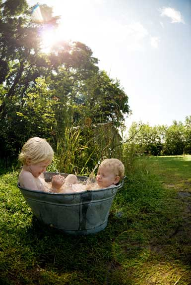
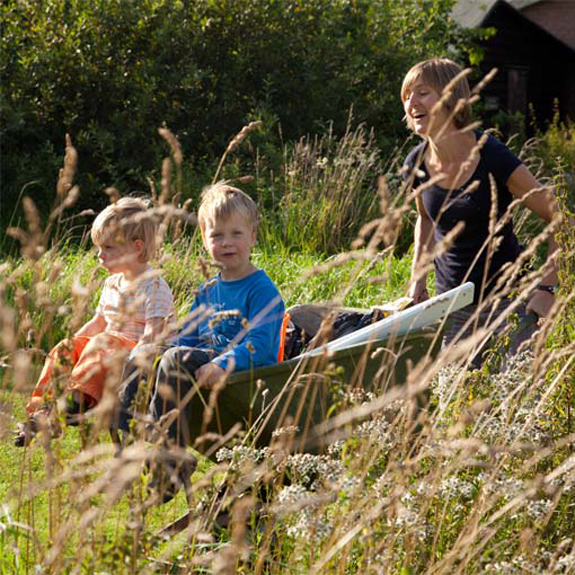
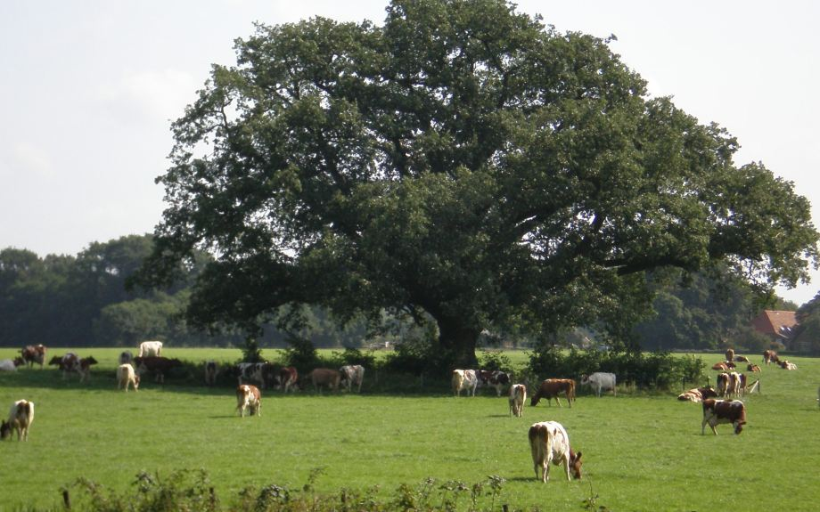
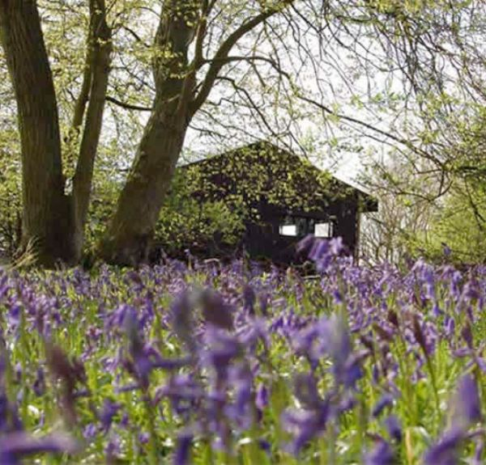

-

De meest bijzondere familievakantie
Lekker buiten leven op de mooiste locaties van Nederland met niets anders dan het ritme van de dag. Niets hoeft en alles mag. Dat is Het Betere BoerenBed.
Een Betere BoerenBed Boerderij is altijd gevestigd op of in de onmiddellijke omgeving van een natuurgebied of landgoed van de Vereniging Natuurmonumenten of één van de andere organisaties voor natuurbeheer.
Tijdens je verblijf kun je – naast genieten – een kijkje nemen in de wereld van de boer. Het Betere BoerenBed is namelijk alleen gevestigd bij werkende agrarische bedrijven; waar de boer en boerin een gedreven en betrokken rol spelen.
De Betere BoerenBed Tent is ongekend ruim en comfortabel met een bijzondere inrichting die herinnert aan het eerlijke boerenlandleven van vroeger dagen. Geniet van de sfeer van kaarsen en olielampen, en van de lange avonden rond de warme houtkachel. Vergeet de tijd...
Het Betere BoerenBed is bestemd voor iedereen die zoekt naar kwaliteit en kleinschaligheid. Beleving en ervaring; ver weg van "massa en plastic pret".
-

Niets moet, alles mag ...
Bij aankomst in Het Betere BoerenBed ervaren we allemaal hetzelfde. De neiging om je horloge af te doen en de mobiele telefoon uit te zetten.
Uit alle hectiek, haast en de wereld waarin de dingen moeten, zijn we op een plek terechtgekomen waar niets moet en alles mag.
Opzij, opzij, opzij, maak plaats, maak plaats, maak plaats, wij hebben ongelooflijke haast… verandert in pompidompidom, tralaloe, tralaloe..... De Boerenlandlucht, maar vooral de rust.
-

-

Rust en ruimte
Bij aankomst in het Betere BoerenBed ervaren de meeste mensen hetzelfde.
De neiging om je horloge af te doen en de mobiele telefoon uit te zetten is als vanzelf aanwezig.
Om de tent heen is er heel veel ruimte om vrij te bewegen. Hutjemutje is er bij Het Betere BoerenBed niet bij.
Want zo uit alle hectiek, haast en de wereld waarin de dingen moeten, ben je op een plek terechtgekomen waar niets moet en alles mag. De dag stuurt zichzelf bij Het Betere BoerenBed.